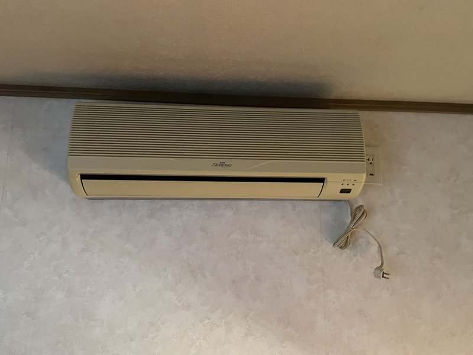
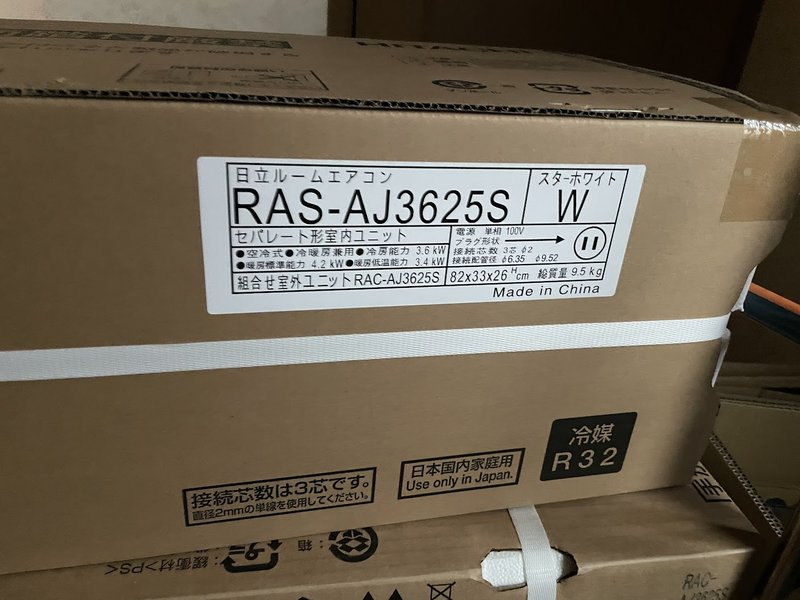
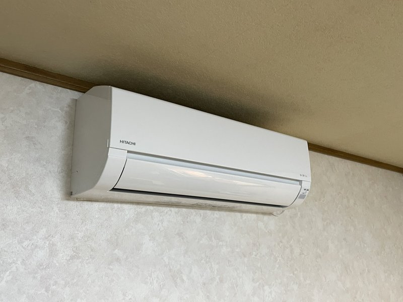
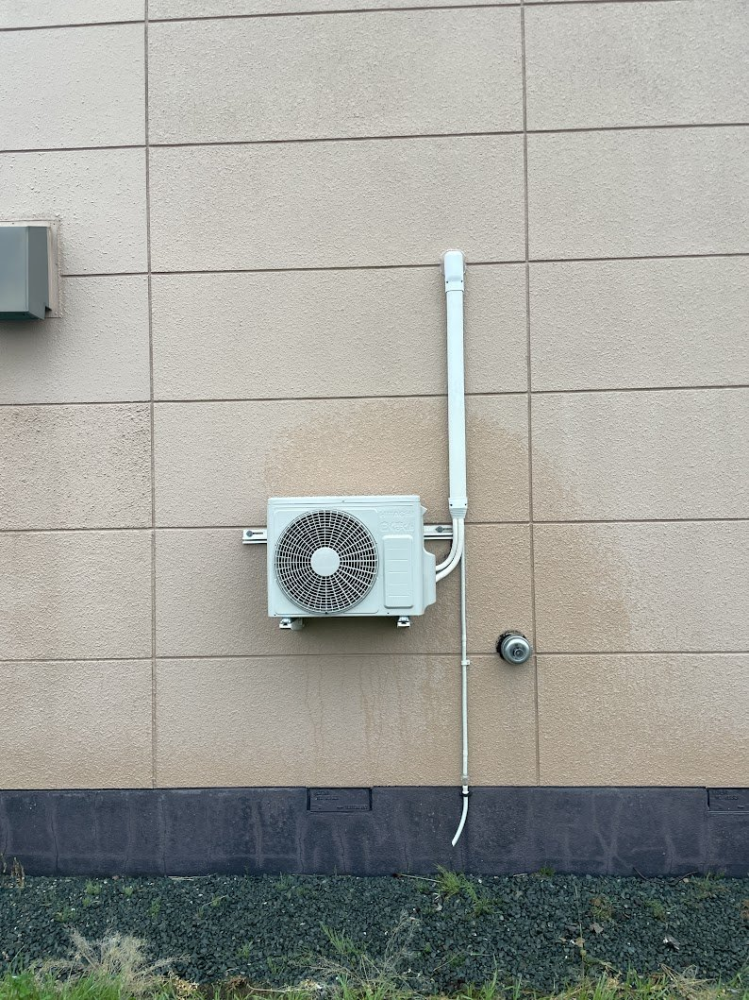
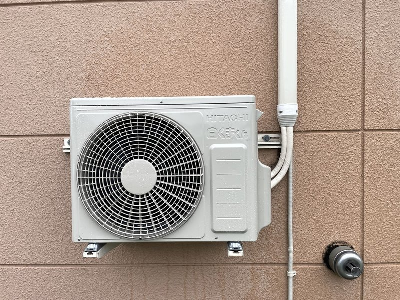
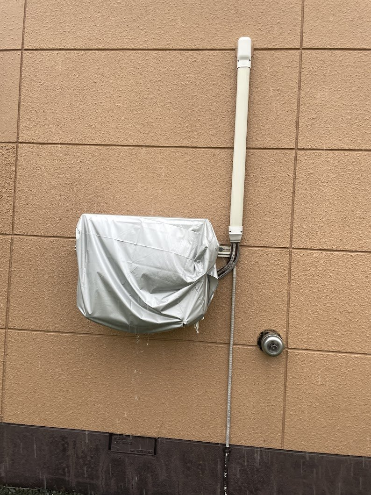
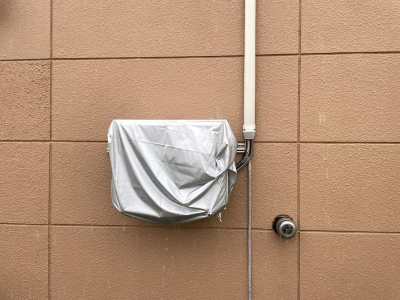

美幌町でエアコン取替工事｜既設配管・室外機架台を再利用してコスト削減
10年以上前の古いエアコン（三洋 SERENO）からの取替工事事例です。事前調査で既設の配管穴・ダクトカバー・室外機架台が再利用できると判断し、新規部材を抑えてお見積りを圧縮。お客様がネットでご購入された日立「白くまくん」(RAS-AJ3625S) の取付に対応しました。事前調査も施工当日もあいにくの大雨でしたが、無事にスムーズな取替施工で完了しています。


施工概要
| 施工日 | 2026年6月 |
|---|---|
| 地域 | 北海道美幌町 |
| 建物 | 戸建て住宅（リビング） |
| 工事内容 | エアコン取替工事（旧機撤去＋お客様持込み新機の取付・既設配管穴/ダクトカバー/室外機架台を再利用） |
| 機種 | 日立 白くまくん RAS-AJ3625S / RAC-AJ3625S（冷暖房兼用・冷房3.6kW・12畳クラス・R32） |
| 追加工事 | 既設室外機架台のボルト錆落し（錆落しスプレー使用・再利用のため）／室外機防雪カバー取付 |
お客様のご要望
「リビングのエアコンがもう 10 年以上前のもので、そろそろ交換したい。本体は自分でネットから購入するので、取付工事だけお願いしたい。できれば既存の配管や室外機の置き場所をそのまま活かして、費用を抑えたいです。」
施工のポイント
大雨の中の事前調査で既設パーツの再利用可否を判断
事前調査の日もあいにくの大雨でしたが、外回りの配管穴・ダクトカバー（化粧カバー）・室外機架台を一つひとつ確認し、すべて再利用できると判断しました。新規穴あけ・新規架台・新規ダクトカバーが不要になるため、お見積り段階から費用を圧縮できます。お客様が抑えたいと希望されていた費用感に、最初の現調の時点で応えることができました。
分電盤調査でエアコン専用コンセントを確認、増設工事は不要
既設エアコンが使っていたコンセントを分電盤側まで追って調査し、すでに専用コンセントになっていることを確認しました。多くの古いお宅では「専用コンセントだと思っていたら実は他の家電と回路を共有していた」というケースが少なくありませんが、今回はその心配がなく、専用回路の新設・コンセント増設は不要。お客様の追加コストを発生させない、シンプルな取替工事に納まりました。
既設の配管穴・室外機ダクトカバーをそのまま再利用
壁面の配管貫通穴は旧機が使っていたものをそのまま流用。外壁面に新規の穴を増やさず、外壁を傷つけない仕上がりにしました。屋外側の配管化粧カバー（ダクトカバー）も既設のものを残し、配管交換のみ実施。新調するなら 1〜2 万円程度の追加費用が発生する部材を、丸ごとカットできました。
室外機架台のボルトが激しく錆びていたが、錆落しスプレーで救出
既設の壁付け室外機架台は再利用できる状態でしたが、固定ボルトがとても錆び付いており、通常の工具では緩めることができませんでした。架台ごと交換すると追加費用が発生するため、錆落しスプレーをじっくり浸透させてから外す段取りに切り替え、なんとか既設架台を温存することができました。一見すると地味な工程ですが、お客様の「コストを抑えたい」というご要望に応えるための判断です。
撤去した旧機はお客様自身で家電リサイクル法に則り処分
取り外した旧機（三洋 SERENO の室内機・室外機）は、お客様ご自身で家電リサイクル法に則って処分されるということでしたので、現場に残置してお引き取りはご自身で対応いただきました。施工費用にリサイクル料金が含まれないため、その分も取替工事費全体のコスト圧縮に寄与しています。
施工の様子
施工工程



完成写真



「既設のパーツを活かしてお安く取替したい」「ネットで買ったエアコンの取付だけ頼みたい」
そんなご相談もお気軽にどうぞ
担当者より
エアコンラボ北見店 担当スタッフ
今回の美幌町のお客様は、本体をお客様ご自身でネット購入され、当店で取付工事のみ承りました。事前調査の日が朝からものすごい大雨で、屋外作業は中断しながらの確認になりましたが、外壁面に取り付けてある既設のダクトカバーや配管穴、室外機の壁付け架台がすべてしっかりした状態で残っており、「これは再利用前提でお見積りできる」 と判断しました。
分電盤側もきちんと拝見させていただき、エアコンが使っているコンセントが専用回路で給電されていることを確認できたので、コンセント増設・回路新設の追加費用も発生しません。お客様のご要望どおり「既設のものを最大限活かして、費用は抑える」方向性で進められる現場でした。
施工当日もまた大雨で、屋外作業の手順を組み直しながら進めました。一番苦労したのは、既設の室外機架台に付いているボルトが激しく錆び付いていたこと。普通のレンチでは回らず、錆落しスプレーをじっくり浸透させて、ようやく外すことができました。架台を新調すれば早いのですが、それでは「既設を活かして費用を抑える」というお客様への約束を裏切ることになります。手間はかかっても、架台はそのまま再利用することにこだわりました。
配管穴・ダクトカバー（配管化粧カバー）もそのまま再利用。取り外した旧機（三洋 SERENO の室内機・室外機）はお客様ご自身で家電リサイクル法に則って処分されるとのことで、リサイクル料金もお客様側で完結する形になりました。お客様が持込みされた日立「白くまくん」（RAS-AJ3625S）は問題なく取り付けることができ、スムーズに動作確認まで完了。雨の中の作業でしたが、最終的にはお客様の希望どおりの低コスト・既設活用の取替施工として、気持ちよく送り出すことができました。
美幌町・近郊エリアの他の施工事例

{kind=link}
{kind=link}
{kind=link}
{kind=link}
{kind=link}
{kind=link}
{kind=link}
美幌町・北見市近郊でエアコン取替工事をご検討中ですか？
お見積り無料。既設配管・架台の再利用判断もお気軽にご相談ください。
美幌町は北見市から最も近い対応エリア。出張費無料で迅速にお伺いします。
受付時間: 9:00〜19:00（年中無休）